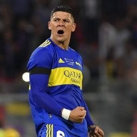

Volver al Inicio <-
Marcos RojoFaustino Marcos Alberto Rojo (La Plata, Provincia de Buenos Aires, Argentina, 20 de marzo de 1990) es un futbolista argentino. Juega de defensa central o lateral izquierdo y su equipo actual es Boca Juniors de la Liga Profesional de Argentina. |
 |
Salido de la cantera del club "león", debutó en el año 2008 en el partido Colón 0 - Estudiantes de La Plata 1 de la Primera División de Argentina. Alejandro Sabella lo convocó para disputar el Mundial de Clubes 2009 disputando el partido final frente al Fútbol Club Barcelona. Finalmente Estudiantes sería subcampeón del mundo. En el club platense permaneció hasta el Torneo Apertura 2010 para luego, con 20 años dar el salto al fútbol ruso.
El 1 de febrero de 2021, se confirma su llegada a Boca Juniors en condición de libre, tras finalizar su vínculo con el Manchester United. Al día siguiente, en su primera conferencia de prensa, declaró que se sentía muy motivado por llegar a "el club más grande de la Argentina" y ansioso por ganar la Copa Libertadores. Sin embargo, se lesionó en su primer entrenamiento. Debutó oficialmente el 14 de marzo en el empate 1-1 contra River Plate, ingresando por Gonzalo Maroni. En octubre de ese mismo año convirtió su primer tanto con el Xeneize frente a Huracán. A fines de ese mismo año ganó la Copa Argentina 2019-20, su primer título con Boca.
En abril de 2022 convirtió su segundo tanto con el Xeneize, de penal, ante Arsenal de Sarandi.